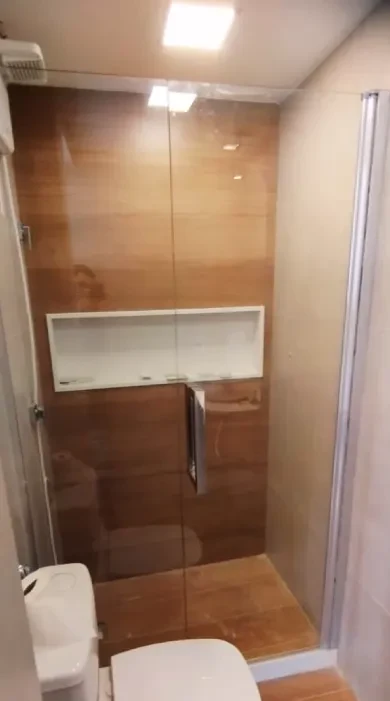
Box
Delimita a área seca e úmida do banheiro, com fácil limpeza e manuseio prático. Modelos: Sistema Versatik, de Abrir, de Canto, Frontal e sobre Banheira.
A Tecno Temper trabalha com produtos de primeira qualidade para que os clientes tenham segurança e conforto. Os sócios têm experiência de mais de 35 anos no ramo de vidros e espelhos.
Produtos
A Tecno Temper é reconhecida em todo o Rio de Janeiro por garantir as melhores soluções que uma vidraçaria pode oferecer, com produtos de grande qualidade, segurança e desempenho.

Delimita a área seca e úmida do banheiro, com fácil limpeza e manuseio prático. Modelos: Sistema Versatik, de Abrir, de Canto, Frontal e sobre Banheira.
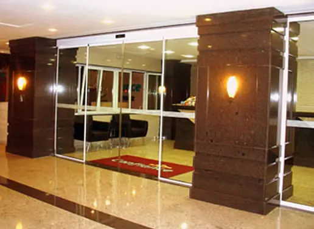
Deixam o ambiente com um toque a mais de elegância, além de fáceis de limpar e com grande durabilidade.
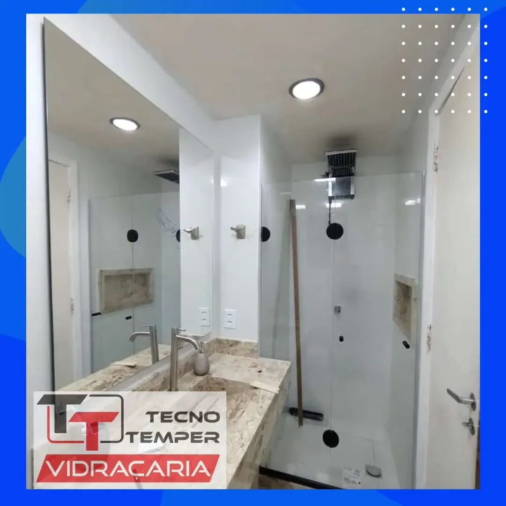
Todo tipo de espelho para decoração residencial ou comercial, em diversos estilos e acabamentos. Também ajuda a aumentar a claridade do ambiente.
Projetos de tampos de vidro para mesas, com profissionais qualificados e alta precisão de medidas.
Trincos, fechaduras, dobradiças, puxadores e outros acessórios para box e portas de vidro.
Comum, temperado, laminado, refletivo e aramado — cada um indicado para um uso. Veja o vidro temperado abaixo.
Obras
Fotos reais de boxes, portas e espelhos instalados pela equipe.
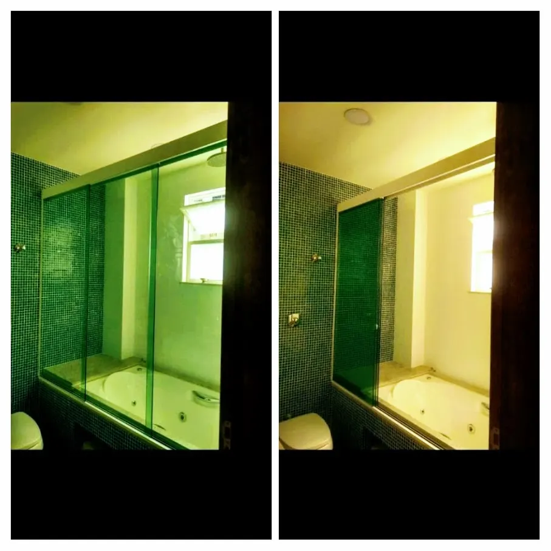
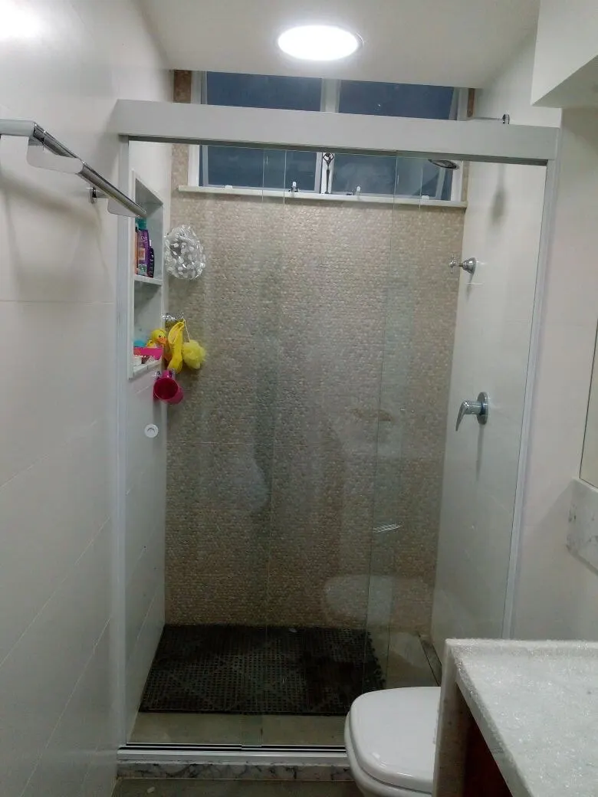
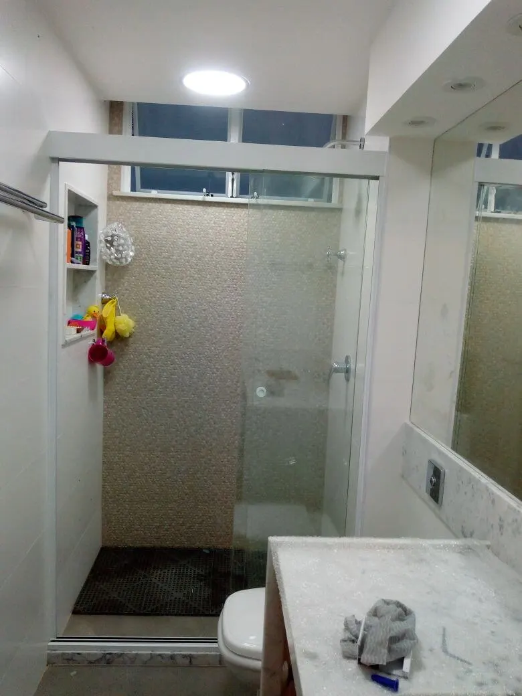
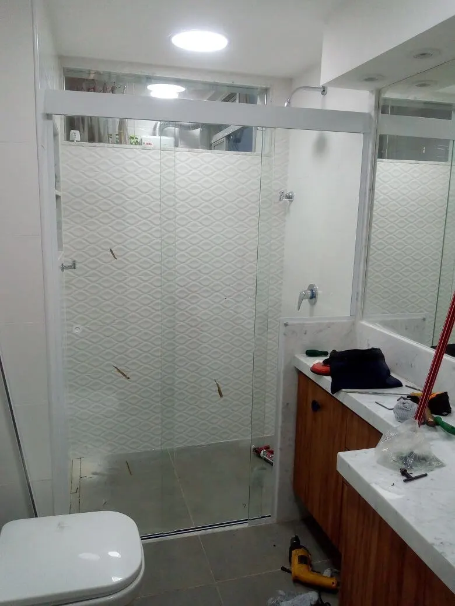
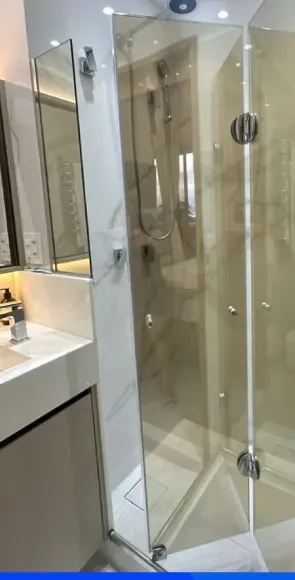
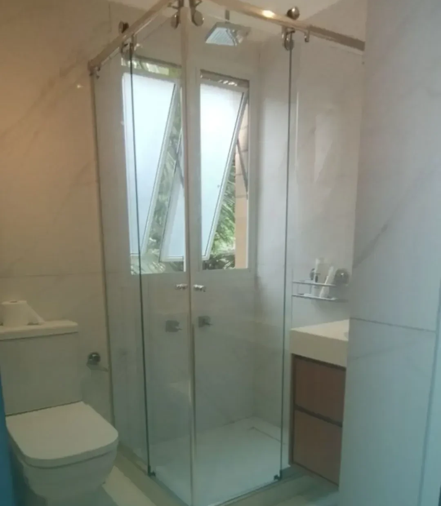
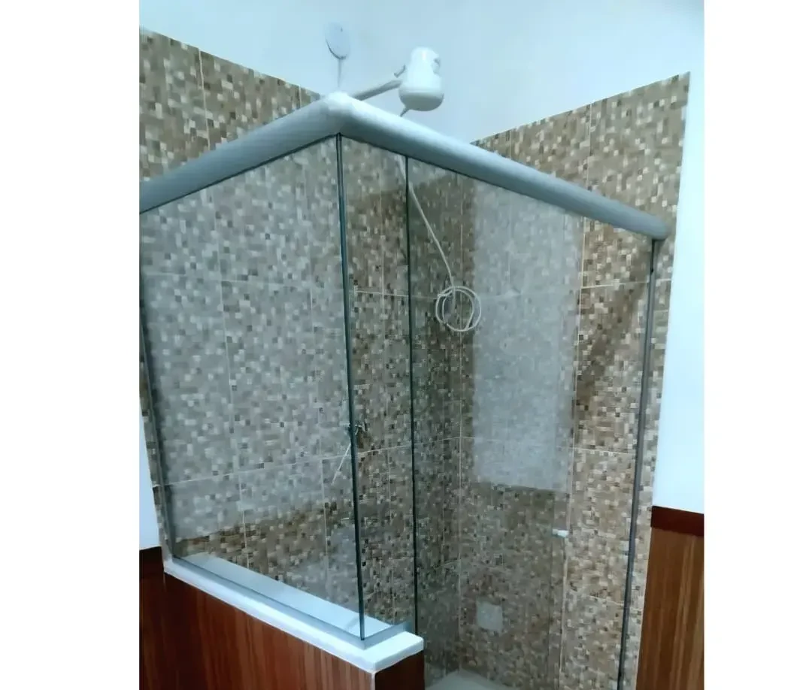
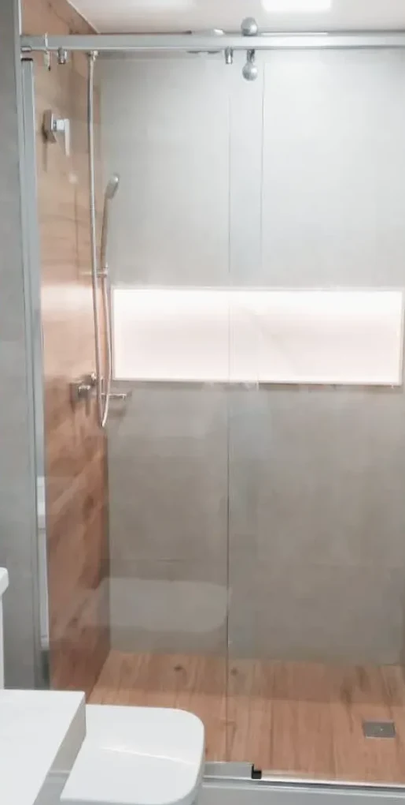
Vidro temperado
Quebra em estilhaços pontiagudos e perigosamente cortantes, e não resiste ao transpassamento. Tem resistência mecânica pequena, pode ser cortado e tem baixo custo.
Passa por um processo de têmpera — aquecido e resfriado rapidamente — que o torna mais resistente que o comum. Caso quebre, se fragmenta em pedaços pequenos que não machucam. Indicado para fachadas, portas, janelas, divisórias, boxes de banheiro e tampos de mesa, por ser fortemente resistente a impactos.
Duas ou mais lâminas de vidro com película plástica entre elas. Ao quebrar, os cacos ficam presos na película, o que impede a passagem de pessoas e objetos.
Camada metálica espelhada que reflete os raios solares e reduz a passagem de calor, sem prejudicar a visão de dentro para fora.
Estrutura de tela de arame que impede que os cacos se soltem ao quebrar. Mais barato que os vidros especiais.
Atendimento
Para seus projetos em vidro, chame a Tecno Temper e garanta receber o melhor atendimento. Orçamento rápido e gratuito.
Contato